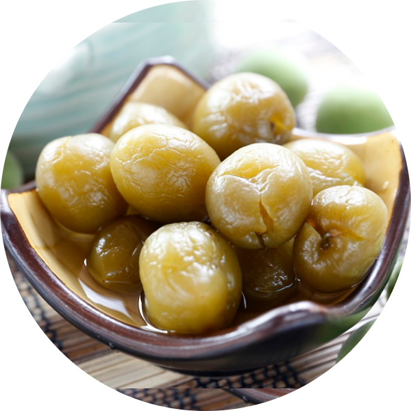

醃脆梅
青梅的產季式初夏時節，轉眼就過，非常短暫，卻很適合製成常備的保存食品，用對抗即將到來的炎夏酷熱，能預防中暑。日本的脆梅稱作「カリカリ梅」，而在山梨縣使用甲州小梅做的脆梅稱作「甲州小梅漬」。其歷史並不長。一九六九年群馬縣的梅子收穫不佳，收集醃漬的梅子的時候，三桶醃漬梅子是比較口感是較硬的。那個年代銷售的醃漬梅子都是柔軟的，因此清脆的梅子被認為是失敗品而放著。隔年赤城フーズ株式会社的社長品嘗到這些梅漬後，決定將其商品化。追查了變硬的成因，讓梅子保持著原本的硬度，在一九七一年以「カリカリ梅」之名銷售，並獲得成功